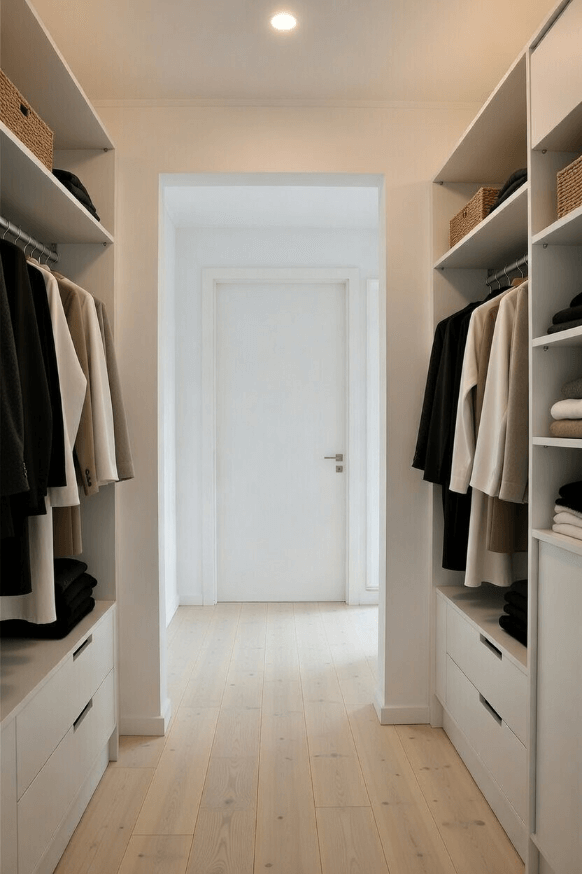
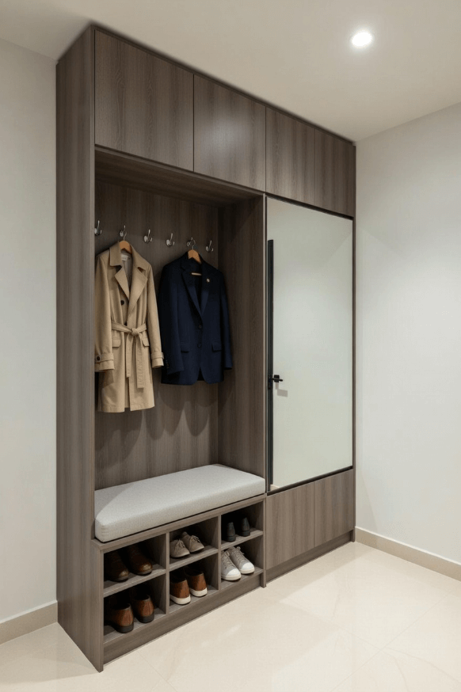
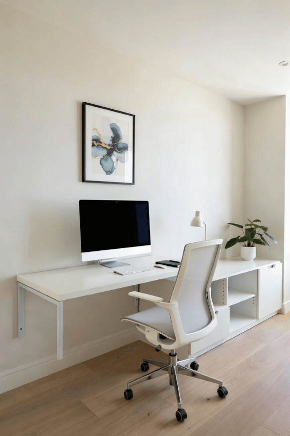

Kiintokalusteiden asennus
Millimetrin tarkkuudella asennetut säilytysratkaisut Joensuussa ja Pohjois-Karjalassa
Pysyvät ja käytännölliset säilytysratkaisut Joensuussa
Kiintokalusteet ovat erinomainen ratkaisu, kun haluat maksimaalisen hyödyn tilasta ja pitkäikäisen lopputuloksen. Asennamme kiintokalusteet suoraan seinään tai lattiaan, jolloin ne muodostavat pysyvän osan huoneen arkkitehtuuria. Millimetrin tarkkuudella tehty asennus takaa, että kaluste istuu täydellisesti paikoilleen Joensuussa ja Pohjois-Karjalassa.
Kiintokalusteet sopivat erityisen hyvin vaatehuoneisiin, kirjahyllyihin, TV-kaappeihin, eteisten säilytykseen ja työhuoneen kalusteisiin. Ne ovat myös erinomainen valinta, kun haluaa hyödyntää hankalat kolkat, kattokorkeudet tai vinot seinät. Palvelemme Joensuun lisäksi myös Kontiolahden ja Liperin alueella.
Kiintokalusteiden edut
- Maksimaalinen tilankäyttö
- Vakaa rakenne
- Yksilöllinen suunnittelu
- Siisti lopputulos
- Pitkäikäisyys
- Lisää arvoa kotiin
Kiintokalusteita jokaiseen tilaan

Vaatehuoneet
Walk-in-vaatehuoneet tai kaapistojen sisälle rakennetut järjestelmät. Hyllyt, tangot, laatikot ja koukut – kaikki juuri oikeissa paikoissa.
- Säädettävät hyllytasot
- Vaateputket oikealla korkeudella
- Vetolaatikot pienille tavaroille
- Kenköhyllyt ja koukut
Kirjahyllyt
Seinään kiinnitetyt kirjahyllyt, jotka kestävät kirjojen painon. Räätälöity hyllyjen määrä, välit ja syvyys.
- Vahvistettu rakenne
- Säädettävät hyllyvälit
- Integroitu valaistus
- Ovet tai avohyllyt

Eteisten säilytys
Naulakot, kenkähyllyt, laukkukoukut ja istuinpenkit – kaikki yhdessä toimivassa kokonaisuudessa.
- Suljetut ja avoimet säilytystilat
- Istuinpenkki kenkien pukemiseen
- Koukut ja naulakot
- Peilit ja valaistus

Työhuoneen kalusteet
Hyllyt, kaapit ja pöydät, jotka tekevät kotitoimistosta toimivan työympäristön.
- Kiinteä työpöytä oikealla korkeudella
- Ylähyllyt ja kaapit
- Kaapeliläpiviennit
- Valaistus työpisteeseen
Asennusprosessi
1. Mittaus ja suunnittelu
Tulemme paikan päälle ottamaan tarkat mitat ja keskustelemaan toiveistasi. Suunnittelemme ratkaisun, joka sopii tilaan ja budjettiisi.
2. Valmistus
Valmistamme kalusteet käsityönä omassa verstaassamme käyttäen laadukkaita materiaaleja.
3. Asennus
Asennamme kalusteet ammattitaidolla paikan päälle. Varmistamme, että kaikki on täysin vaakaan, pystyyn ja kiinni.
4. Viimeistely
Viimeistelemme saumat, reunat ja yksityiskohdat. Siivoamme tilan ja luovutamme valmiin kalusteen.
Tarvitsetko säilytystilaa?
Ota yhteyttä, niin tulemme katsomaan tilannetta ja suunnittelemaan parhaat kiintokalustehet juuri sinun kotiisi.
Pyydä ilmainen tarjous